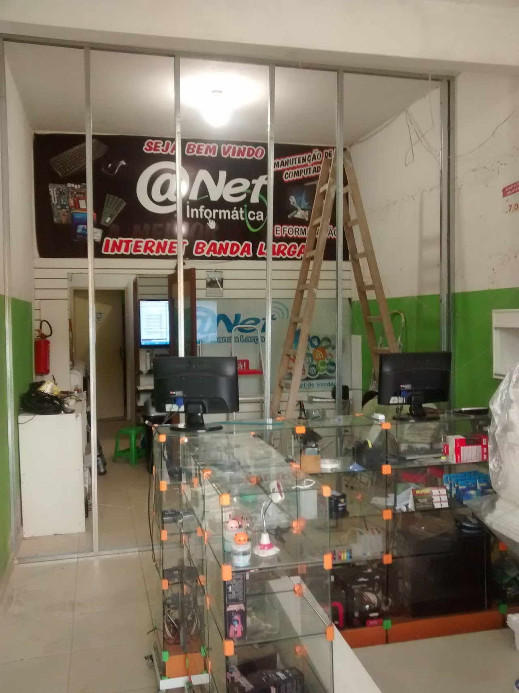

Nossa história
Do ponto de acesso à internet em 2007 à fibra óptica: como a Arroba chegou até aqui.
2007
Tudo começou como Arroba Net
O Arroba Banda Larga nasceu em 2007 , em Campos dos Goytacazes – RJ, ainda como Arroba Net , funcionando inicialmente como uma lan house , um ponto de acesso à internet para a comunidade.

Evolução
De lan house a provedor de internet
Com o avanço da tecnologia e as novas necessidades dos clientes, a empresa evoluiu rapidamente. Passou de lan house para provedor de internet , acompanhando cada etapa da transformação digital: Primeiro oferecendo tecnologia via rádio ; Depois migrando para cabo ; E, atualmente, trabalhando com fibra óptica , a tecnologia mais moderna e estável do mercado.
- Rádio
Primeira tecnologia de provimento de internet.
- Cabo
A migração seguinte, acompanhando a transformação digital.
- Fibra óptica
A tecnologia mais moderna e estável do mercado, usada hoje.
Propósito
Melhorar a experiência dos clientes
Essa evolução constante sempre teve um propósito central: melhorar a experiência dos nossos clientes , oferecendo mais qualidade, mais velocidade e uma conexão cada vez mais confiável.
Crescer com tecnologia, mas sempre cuidando de pessoas.
Hoje
Referência na região
Hoje, após anos de crescimento e modernização, o Arroba segue firme como referência na região, mantendo sua essência: crescer com tecnologia, mas sempre cuidando de pessoas